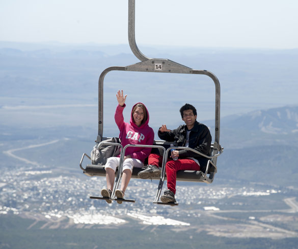
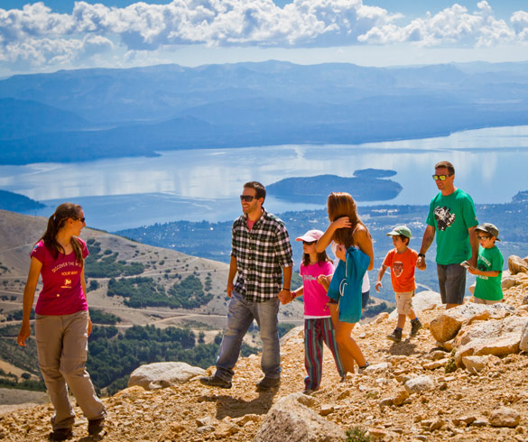
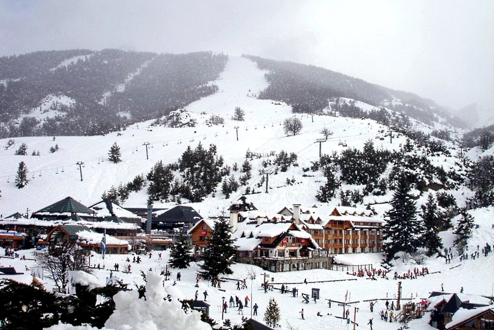
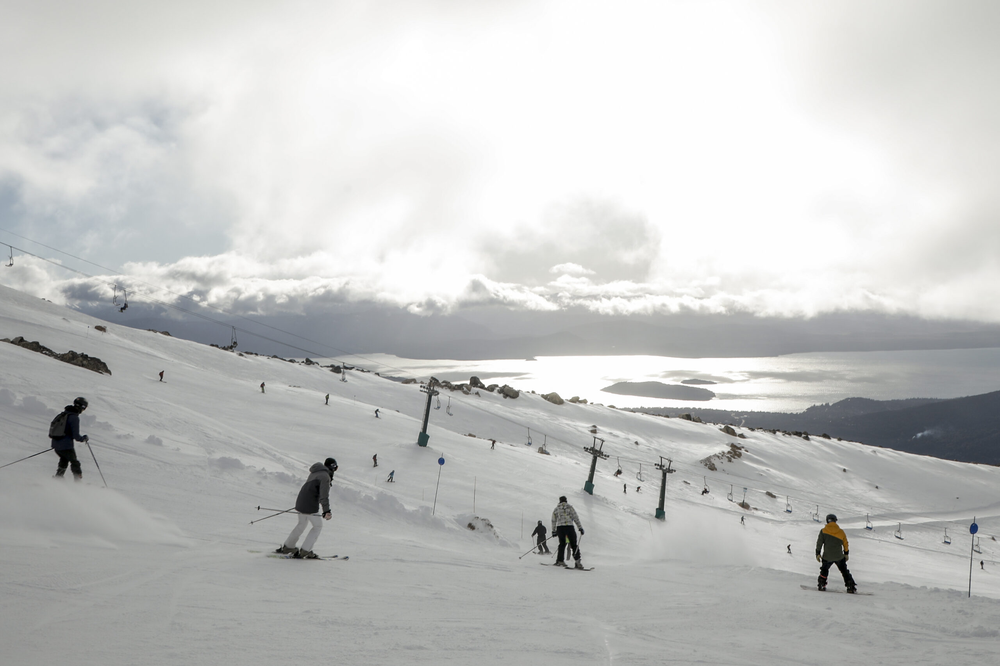
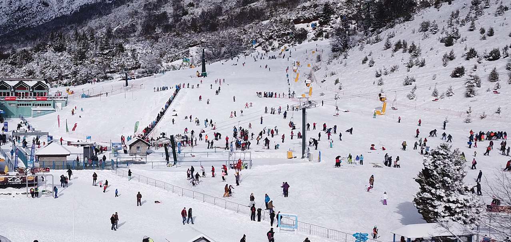
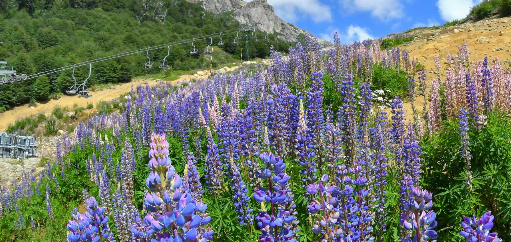
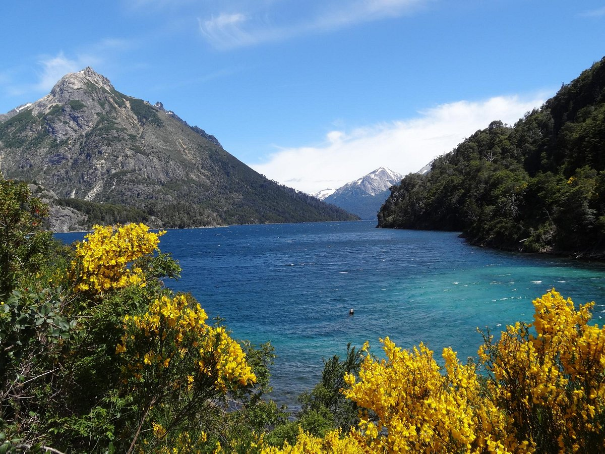
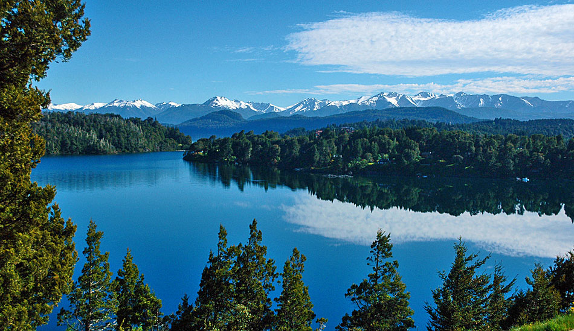

Cerro catedral
El cerro catedral Es el centro de esquí más grande del hemisferio sur ( 1200 hectáreas esquiables ) y ofrece una amplia infraestructura de servicios para la práctica de deportes invernales. Está abierto todo el año y cuenta con 32 medios de elevación (entre aerosillas, telecabinas y medios de arrastre), facilitando el ascenso de 28 mil personas por hora.

A lo largo de toda la montaña podrás disfrutar de los hermosos paradores instalados en sus imponentes laderas, con vistas increíbles a los lagos Nahuel Huapi y Gutiérrez, la cordillera de los Andes, el cerro Tronador, y los cerros demás circundantes.
También encontrarás una villa al pie de la montaña con más de 7 mil camas, un amplio abanico de opciones gastronómicas y una gran variedad de locales comerciales.. En invierno encontrarás todo lo necesario para la práctica de esquí y snowboard: desde alquileres de equipo hasta escuelas preparadas para enseñar en todos los niveles.
En verano podés practicar múltiples actividades de aventura para toda la familia, escalada, trekking, tirolesa y magic donas. Disfrutá de hermosas vistas, gastronomía y un área de ruedas sin motor. Además, podés disfrutar de diferentes eventos de descenso en Mountain Bike y otros deportes.
 Catedral Alta Patagonia
La empresa responsable, Catedral Alta Patagónia, recibe cada temporada de esquí en invierno con un equipamiento que cuenta con: 28 medios de elevación entre cabinas; telesillas dobles, triples, cuádruple y séxtuple; magic carpet y medios de arrastre.
También cuenta con 1200 hectáreas para la práctica de los deportes invernales. Más de 60 pistas para todos los niveles, hacen del centro de esquí el lugar ideal para que cada uno disfrute del deporte como más le guste y pueda progresar sin importar su nivel. Sectores para principiantes, pistas y caminos de nivel intermedio y avanzado, más las áreas fuera de pista, aseguran diversión.
Para quienes quieren dar sus primeros pasos en los deportes de nieve, Catedral ofrece una completa área de aprendizaje en la Base. Allí, los visitantes realizan un recorrido paso a paso para luego poder disfrutar de las diferentes pistas en altura, se familiarizan con el equipo, realizan los primeros desplazamientos y giros, y aprenden a tomar el control de las tablas. Un espacio ideal para aprender de forma segura y accesible. Este sector cuenta con siete medios de elevación y tiene una superficie esquiable de más de 3,5 hectáreas al pie de la montaña.
Y en verano...
Ascenso a la cumbre del Cerro en la Telecabina Amancay (1700 msnm) y la Telesilla Diente de Caballo (hasta los 1936 msnm). Actividades para toda la familia, vistas panorámicas y gastronomía de montaña.
Parque Nacional Nahuel Huapi
El Parque Nacional Nahuel Huapi se ubica al sur de la República Argentina y al noroeste de la Patagonia. Las 710.000 hectáreas que componen su territorio se emplazan en dos provincias: Neuquén y Río Negro, su vecindad con ciudades como San Carlos de Bariloche, Dina Huapi y Villa La Angostura; y cuenta con la existencia dentro del parque de dos villas como Mascardi y Traful, parajes rurales como Cuyin Manzano y más de 700 loteos privados, resultando un lugar de encuentro de pobladores, comunidades, vecinos, instituciones, organizaciones y visitantes.
¿Qué protege el Parque Nacional Nahuel Huapi?
El Parque Nacional Nahuel Huapi es refugio de naturaleza y cultura, su principal objetivo es la conservación de una porción de los bosques andinos norpatagónicos y de la estepa, promoviendo un mayor conocimiento de estos ambientes y generando otras formas de integración armoniosa con la vida en la naturaleza y el desarrollo humano, compatible con la preservación de estos ambientes.
Teleférico Cerro Otto
Lleno de incomparables tesoros para los sentidos, el lugar ofrece a los visitantes imponentes espectáculos naturales los 365 días del año. Cada estación con su encanto particular y variadas actividades para la familia, convierten a este complejo en la excursión tradicional por excelencia de San Carlos de Bariloche.

Montañas; lagos; bosques y cielos increíbles hacen de este lugar un verdadero paraíso terrenal. Sus actividades, diferentes según la época del año, permiten además divertirse en perfecta armonía con la naturaleza.